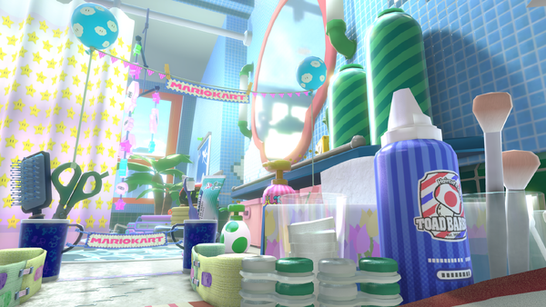

Shortcut Strategy
Fly over the toilet and enter the gust water, then stay toward the top right corner to catch the boost and beat the normal line.
Best results
This trick is most effective when you combine it with a speed boost or drift launch to make the detour worth the extra distance.